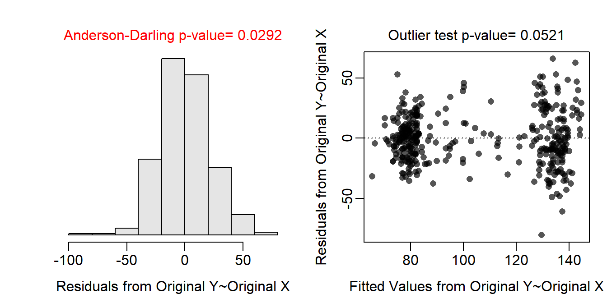
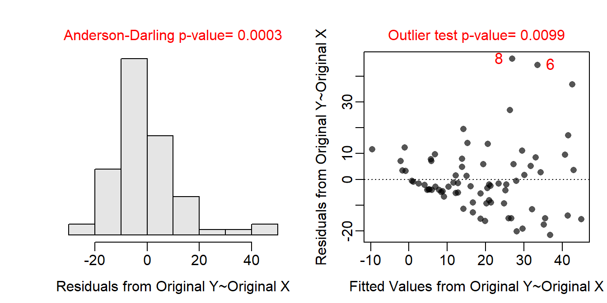
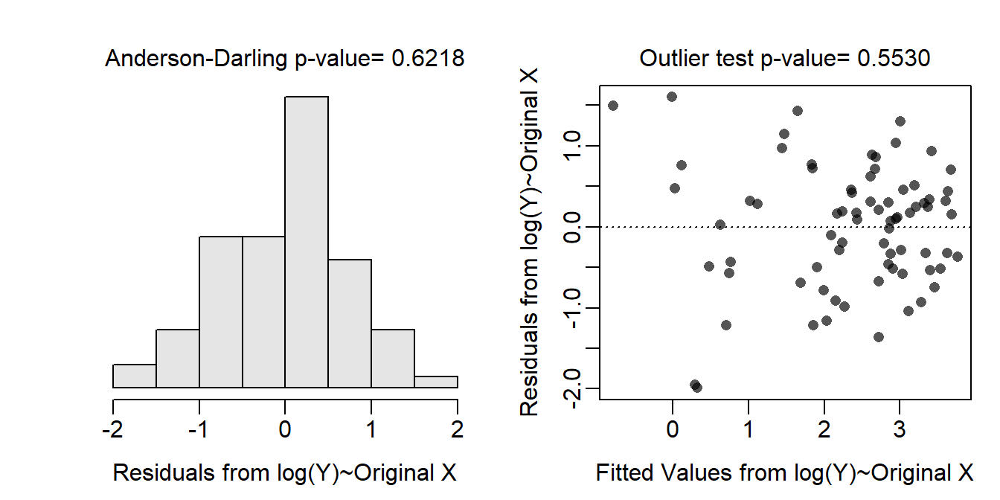
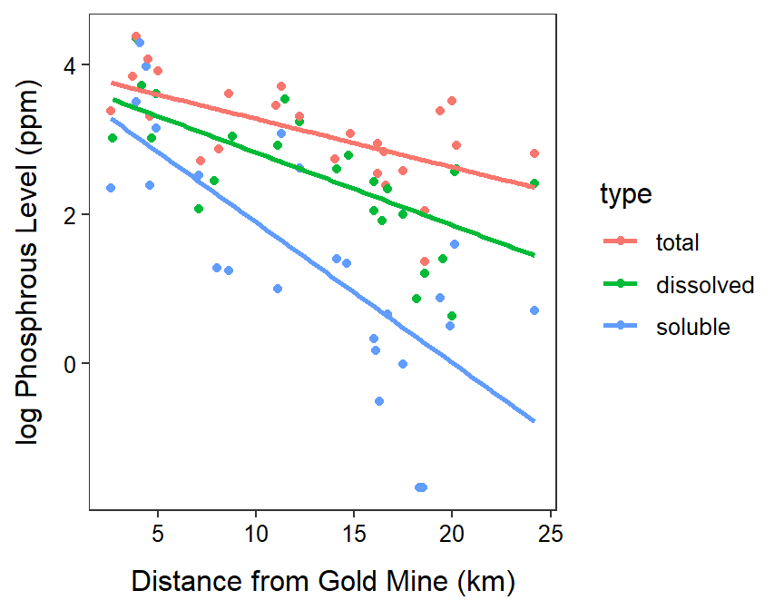

ht <- read.csv("https://raw.githubusercontent.com/droglenc/NCData/master/HawksbillTurtles.csv")
ht$Region <- factor(ht$Region,
levels=c("Arabian Gulf","Indian Ocean","Red Sea",
"Caribbean","West Atlantic"))
ivr.ht <- lm(Clutch.Size~CCL+Region+CCL:Region,data=ht)
anova(ivr.ht)Analysis of Variance Table
Response: Clutch.Size
Df Sum Sq Mean Sq F value Pr(>F)
CCL 1 246757 246757 526.8775 < 2.2e-16
Region 4 22045 5511 11.7675 5.266e-09
CCL:Region 4 3461 865 1.8472 0.1192
Residuals 368 172349 468 assumptionCheck(ivr.ht)
ivr.ht2 <- lm(Clutch.Size~CCL+Region,data=ht)
ivr.mc2 <- emmeans(ivr.ht2,pairwise~Region)
( ivr.mcsum2 <- summary(ivr.mc2,infer=TRUE) )$emmeans
Region emmean SE df lower.CL upper.CL t.ratio p.value
Arabian Gulf 90.6 3.31 372 84.1 97.1 27.406 <.0001
Indian Ocean 109.2 7.87 372 93.8 124.7 13.880 <.0001
Red Sea 112.6 5.36 372 102.0 123.1 20.985 <.0001
Caribbean 118.4 4.68 372 109.2 127.6 25.277 <.0001
West Atlantic 121.5 4.50 372 112.7 130.4 26.999 <.0001
Confidence level used: 0.95
$contrasts
contrast estimate SE df lower.CL upper.CL t.ratio p.value
Arabian Gulf - Indian Ocean -18.64 7.43 372 -39.0 1.72 -2.510 0.0906
Arabian Gulf - Red Sea -21.97 4.57 372 -34.5 -9.43 -4.802 <.0001
Arabian Gulf - Caribbean -27.80 7.58 372 -48.6 -7.03 -3.668 0.0026
Arabian Gulf - West Atlantic -30.94 6.88 372 -49.8 -12.08 -4.497 0.0001
Indian Ocean - Red Sea -3.33 8.41 372 -26.4 19.73 -0.396 0.9948
Indian Ocean - Caribbean -9.16 10.49 372 -37.9 19.59 -0.873 0.9065
Indian Ocean - West Atlantic -12.30 9.97 372 -39.6 15.03 -1.234 0.7315
Red Sea - Caribbean -5.84 8.86 372 -30.1 18.44 -0.659 0.9649
Red Sea - West Atlantic -8.98 8.20 372 -31.5 13.51 -1.094 0.8094
Caribbean - West Atlantic -3.14 4.29 372 -14.9 8.61 -0.732 0.9489
Confidence level used: 0.95
Conf-level adjustment: tukey method for comparing a family of 5 estimates
P value adjustment: tukey method for comparing a family of 5 estimates
gm <- read.csv("http://derekogle.com/NCMTH207/modules/ce/data/GoldMine.csv")
gm$type <- factor(gm$type,levels=c("total","dissolved","soluble"))
ivr.gm <- lm(phosp~distance+type+distance:type,data=gm)
assumptionCheck(ivr.gm)
assumptionCheck(ivr.gm,lambday=0)
gm$logphosp <- log(gm$phosp)
ivr.gmt <- lm(logphosp~distance+type+distance:type,data=gm)
mc.gmt <- emtrends(ivr.gmt,specs=pairwise~type,var="distance",tran="log")
( mcsum.gmt <- summary(mc.gmt,infer=TRUE,type="response") )$emtrends
type response SE df lower.CL upper.CL t.ratio p.value
total 0.979 0.00809 69 0.963 0.996 -2.538 0.0134
dissolved 0.963 0.00981 69 0.943 0.982 -3.745 0.0004
soluble 0.871 0.02182 69 0.828 0.915 -5.525 <.0001
Confidence level used: 0.95
Intervals are back-transformed from the log scale
Tests are performed on the log scale
$contrasts
contrast ratio SE df lower.CL upper.CL t.ratio p.value
total / dissolved 1.02 0.0133 69 0.986 1.05 1.311 0.3937
total / soluble 1.12 0.0297 69 1.056 1.20 4.453 0.0001
dissolved / soluble 1.11 0.0299 69 1.036 1.18 3.707 0.0012
Confidence level used: 0.95
Conf-level adjustment: tukey method for comparing a family of 3 estimates
Intervals are back-transformed from the log scale
P value adjustment: tukey method for comparing a family of 3 estimates
Tests are performed on the log scale ggplot(data=gm,mapping=aes(x=distance,y=logphosp,color=type)) +
geom_point() +
labs(x="Distance from Gold Mine (km)",y="log Phosphrous Level (ppm)") +
theme_NCStats() +
geom_smooth(method="lm",se=FALSE)`geom_smooth()` using formula 'y ~ x'